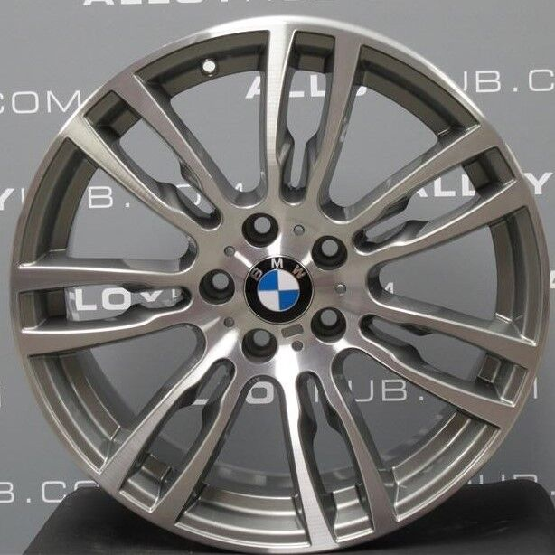

    <div class="container mt-5">
        <div class="row">
            <div class="col-lg-8 mx-auto">
                <h1 class="mb-3">Uued veljed Style 403M hea hinnaga!</h1>
                <p class="text-muted">Avaldatud: 25. märts 2025</p>
                
                

                <p>Kui mul on juba **BMW F31**, siis miks mitte anda sellele **veel stiilsem välimus**? 
                Olen juba pikka aega tahtnud oma autole **403M velgi**, aga need pole just kõige odavamad. 
                Lõpuks leidsin ühe **väga hea diili**, millest ei saanud mööda minna!</p>

                <h3>Miks just Style 403M?</h3>
                <ul>
                    <li>🔥 **Sportlik ja agressiivne välimus** – ideaalne M-Sport paketiga</li>
                    <li>⚖ **Kerged ja tugevad** – valatud alumiiniumist</li>
                    <li>🔵 **Originaal BMW disain** – ei mingeid replikasid!</li>
                </ul>

                <h3>Velgede ost ja hind</h3>
                <p>Veljed leidsin juhuslikult **Facebook Marketplace'ist**, kus keegi müüs neid **väga korralikus seisukorras** 
                ning **väga hea hinnaga**. Tavaliselt maksavad need **800–1200€**, aga mina sain need **550€ eest** koos rehvidega! 💰</p>

                <h3>Esimesed muljed peale paigaldust</h3>
                <p>Paigaldasin veljed kohe ja **WOW, auto näeb välja täiesti uus**! 💯 Need annavad kogu välimusele **agressiivsema ja sportlikuma** vibe’i.</p>

                <p>Roolitunnetus tundub ka veidi parem – ilmselt tänu **laiematele rehvidele**. Plaanin varsti teha ka väikese testisõidu, et tunnetust veel paremini proovida.</p>

                <h3>Mida järgmisena?</h3>
                <p>Nüüd, kui veljed on paigas, hakkab mõte liikuma **madaldusvedrude või uue väljalaskesüsteemi** peale. 
                Aga sellest juba järgmises postituses! 👀</p>

                <hr>

                <p><strong>Kategooriad:</strong> <span class="badge bg-primary">Autod</span> <span class="badge bg-secondary">BMW</span> <span class="badge bg-success">Tuuning</span> <span class="badge bg-warning">Veljed</span></p>

                <div class="d-flex justify-content-between mt-4">
                    <a href="index_.php?page=post2" class="btn btn-outline-secondary">⬅ Eelmine postitus</a>
                    <a href="index_.php?page=post4" class="btn btn-primary">Järgmine postitus ➡</a>
                </div>
            </div>
        </div>
    </div>